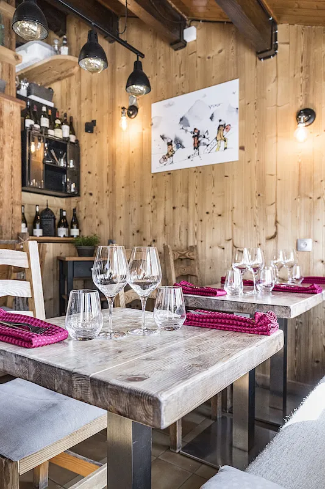
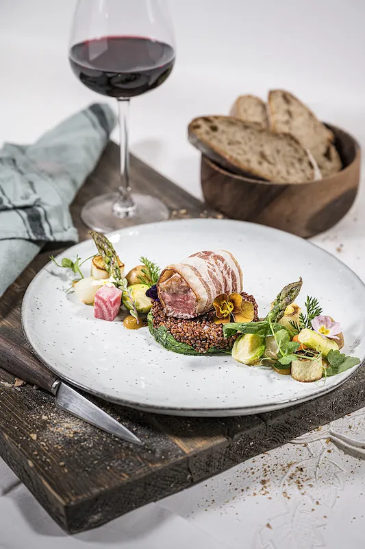

-
Aux Aravis.
Cuisine de savoir-faire et service impeccable,
notre équipe passe à la casserole, et vous passez à table !

Produits locaux ou régionaux de pleine fraîcheur et grande saveur, inspirations de tradition et fait-maison à chaque saison, nous mettons toujours un point d’honneur à vous servir le vrai et le meilleur.




Le menu bistrot à 43€
Saison et fait-maison, notre menu se dessine pour vous offrir toute l'âme de notre cuisine.
L'équipe
Camille, grand coeur au bec salé
Sarah, grand sourire à la carte
Horaires d'hiver
Ouvert du Mardi Soir au Dimanche Soir
Service de 12h à 13h30 et de 18h45 à 21h30.
Réserver une table
Pour vos réservations, privatisations et autres demandes, nous sommes juste là :